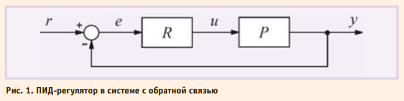
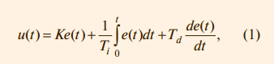
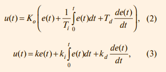
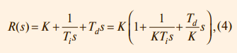

ЧАСТЬ 1
ВВЕДЕНИЕ
ПИД-регулятор был изобретён ещё в 1910 году [1]. Через 32 года, в 1942 году, Зиглер и Никольс разработали методику его настройки [2]. После появления микропроцессоров в 1980х годах развитие ПИД-регуляторов происходит нарастающими темпами. Общее количество публикаций по ПИД-регуляторам за 9 лет с 1973 по 1982 год составило 14 шт., с 1983 по 1992 год – 111 шт., а за период с 1998 по 2002 год (всего за 4 года) – 225 шт. [3]. На одном только семинаре IFAC (International Federation of Automatic Control) в 2000 году было представлено около 90 докладов, посвящённых ПИДрегуляторам [4]. Количество патентов по этой теме, содержащихся в патентной базе данных http://gb.espacenet.com, в январе 2006 года составило 364 шт.
ПИД-регулятор относится к наиболее распространённому типу регуляторов. Порядка 90-95% регуляторов [1, 5], находящихся в настоящее время в эксплуатации, используют ПИД-алгоритм. Причинами столь высокой популярности являются простота построения и промышленного использования, ясность функционирования, пригодность для решения большинства практических задач и низкая стоимость. Среди ПИД-регуляторов 64% приходится на одноконтурные регуляторы и 36% – на многоконтурные [6]. Контроллеры с обратной связью охва тывают 85% всех приложений, контроллеры с прямой связью – 6%, и контроллеры, соединённые каскадно, – 9% [6].
После появления дешёвых микропроцессоров и аналогоцифровых преобразователей в промышленных ПИД-регуляторах используются автоматическая настройка параметров, адаптивные алгоритмы, нейронные сети, генетические алгоритмы, методы нечёткой логики. Усложнилась структура регуляторов: появились регуляторы с двумя степенями свободы, с применением принципов разомкнутого управления в сочетании с обратной связью, со встроенной моделью процесса. Кроме функции регулирования, в ПИДконтроллер были введены функции аварийной сигнализации, контроля разрыва контура регулирования, выхода за границы динамического диапазона и др.
Несмотря на долгую историю развития и большое количество публикаций, остаются проблемы в вопросах устранения интегрального насыщения, регулирования объектов с гистерезисом и нелинейностями, автоматической настройки и адаптации. Практические реализации ПИДконтроллеров не всегда содержат антиалиасные фильтры, чрезмерный шум и внешние возмущения затрудняют настройку параметров. Проблемы усложняются тем, что в современных системах управления динамика часто неизвестна, регулируемые процессы нельзя считать независимыми, измерения сильно зашумлены, нагрузка непостоянна, технологические процессы непрерывны.
Далее рассмотрены только регуляторы для одномерных объектов (с одним входом и одним выходом), для медленных (тепловых) процессов, которые наиболее распространены в АСУ ТП.
КЛАССИЧЕСКИЙ ПИД-РЕГУЛЯТОР
Простейшая система автоматического регулирования с обратной связью показана на рис. 1. В ней блок R называют регулятором, P – объектом регулирования, r – управляющим воздействием, или уставкой, e – сигналом рассогласования, или ошибки, u – выходной величиной регулятора, y – регулируемой величиной.

Если выходная переменная u регулятора R описывается выражением:

где t – время, а K, Ti, Td – пропорциональный коэффициент, постоянная интегрирования и постоянная дифференцирования соответственно, то такой регулятор называют ПИДрегулятором.
В частном случае пропорциональная, интегральная или дифференциальная компоненты могут отсутствовать, и такие упрощённые регуляторы называют И, П, ПД или ПИ-регуляторами.
Распространены также следующие модификации выражения (1):

Между параметрами, входящими в выражения (1)-(3), существует простая связь. Однако отсутствие общепринятой системы параметров часто приводит к путанице. Это нужно помнить при замене одного ПИД-контроллера на другой или использовании программ настройки параметров. Мы будем пользоваться выражением (1).
Используя преобразование Лапласа при нулевых начальных условиях, передаточную функцию ПИД-регулятора можно представить в операторной форме:

где s – комплексная частота.
Амплитудно-частотная (АЧХ) и фазочастотная (ФЧХ) характеристики операторной передаточной функции (4) показаны на рис. 2. В области нижних частот АЧХ и ФЧХ определяютсяинтегральным членом, в области средних частот – пропорциональным, в области высоких – дифференциальным.
На систему автоматического регулирования могут воздействовать (рис. 3) внешние возмущения d = d(s) и шум